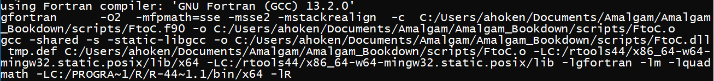

9 R Interfaces
“You should try things; R won’t break."
- Duncan Murdoch, from R-help (May 2016)
Code from other languages can be interfaced to R at the command line prompt and within R scripts. For instance, we have already considered the use of Perl regex calls for managing character strings in Ch 4 (Section 4.3). Other examples include code interfaces from C, C++ (via package Rcpp, Eddelbuettel et al. (2023), Eddelbuettel (2013), Eddelbuettel and Balamuta (2018)), Fortran, MATLAB (via package R.matlab, Bengtsson (2022)), Python (via package reticulate, Ushey, Allaire, and Tang (2023)), Java (via package rJava, Urbanek (2021)). R can also be called from a number of different languages including C and C++ (see package RInside, Eddelbuettel, Francois, and Bachmeier (2023)), Java (via the Java package RCaller, Satman (2014)), or Python (via the Python package, rpy2). For instance, the R package RCytoscape, from the Bioconductor project, allows cross-communication between the popular Java-driven software for molecular networks Cytoscape, and R.
There are costs and benefits to interfacing with R to and from other languages (Chambers 2008). Costs include:
- Non interpreted languages (see Section 9.1 immediately below) will require compilation. Therefore it may be wise to limit such code to package-development applications (Ch 10) since R built-in procedures can facilitate this process during package building.
- Interfacing with older low level languages (e.g., Fortran and C (Section 9.3)) increases the possibility for programming errors, often with serious consequences, including memory faults. That is, bugs bite!
- Interfacing with some languages may increase the possibility for programs being limited to specific platforms.
- R programs can often be written more succinctly. For instance, Morandat et al. (2012) found that R programs are about 40% smaller than analogous programs written in C.
Despite these issues, there are a number of strong potential benefits. These include:
- A huge number of useful, well-tested, algorithms have been written in other languages, and it is often straightforward to interface these procedures through R.
- The system speed of other languages may be much better than R for many tasks. For instance, algorithms written in non-interpreted languages, are often much faster than corresponding procedures written in R.
- Non-OOP languages may be more efficient than R with respect to memory usage.
This chapter considers interfaces with several important programming languages, including Fortran, C, C++, and particularly, Python. Interfaces with languages used primarily for GUI generation and web-based applications, for example, Tcl/Tk, JavaScript, JavaScript Object Notation (JSON), HTML, and Cascading Style Sheets (CSS), are considered in Ch 11.
To account for the frequent use of distinct computer languages in this chapter, the following chunk coloring conventions will be used hereafter in this book79:
# R code! Fortan code
9.1 Interpreted versus Compiled Languages
Along with many other useful languages (e.g., Python, JavaScript), R is generally applied as an interpreted language. Interpreted code must be translated into binary before it can be executed. This process can slow down function run times, particularly if the function includes iterative procedures like loops. Non-interpreted (compiled) languages include C, Fortran, and Java. For these languages, a compiler (a translation program) is used to transform the source code into a target “object” language, which is generally binary (Ch 11). The end product of the compilation is called an executable file (Figure 9.1). Executables from other languages can be called from within R to run R functions and procedures.
Figure 9.1: Creating an executable file in a compiled language.
knitr::opts_knit$get('rmarkdown.pandoc.to')[1] "html"9.2 Interfacing with R Markdown/RStudio
Language and program interfacing with R is often greatly facilitated through the use of R Markdown chunks. This is because many languages other than R are supported by R Markdown, via knitr. The language definition for a particular R Markdown chunk is given by the first term in that chunk. For instance, ```{r} ``` initiates a conventional R code chunk, whereas ```{python}``` initiates a Python code chunk. Here are the current R Markdown language engines (note that items 52-64 are not explicit computer languages).
names(knitr::knit_engines$get()) [1] "awk" "bash" "coffee" "gawk" "groovy"
[6] "haskell" "lein" "mysql" "node" "octave"
[11] "perl" "php" "psql" "Rscript" "ruby"
[16] "sas" "scala" "sed" "sh" "stata"
[21] "zsh" "asis" "asy" "block" "block2"
[26] "bslib" "c" "cat" "cc" "comment"
[31] "css" "ditaa" "dot" "embed" "eviews"
[36] "exec" "fortran" "fortran95" "go" "highlight"
[41] "js" "julia" "python" "R" "Rcpp"
[46] "sass" "scss" "sql" "stan" "targets"
[51] "tikz" "verbatim" "theorem" "lemma" "corollary"
[56] "proposition" "conjecture" "definition" "example" "exercise"
[61] "hypothesis" "proof" "remark" "solution" "glue"
[66] "glue_sql" "gluesql" As evident in the output above, R Markdown engines extend to compiled languages including Fortran (engine = fortran) and C (engine = c). Ideally, this is accomplished by compiling source code in a chunk in an on-the-fly, automated step, using native R compilers, and automatically loading the resulting compiled executable for potential calls in R chunks (Xie, Dervieux, and Riederer 2020). This process may be hampered, however, by a number of factors including non-administrator permissions and environmental path definitions, particularly on Windows computers. As a result, I present more complex, but more dependable method for code compilation and execution here.
9.3 Fortran and C
S, the progenitor of R, was created at a time when Fortran routines dominated numerical programming, and R arose when C was approaching its peak in popularity. As a result, strong connections to those languages, particularly C, remain in R80. R contains specific base functions for interfacing with both C and Fortran executables: .C() and .Fortran()81, respectively. More flexible general interface functions, which were introduced in later versions of R, and may have better performance characteristics, include .Call() and .External().
Recall that an R object of class numeric will be automatically assigned to base type double, although it can be coerced to base type integer (this will potentially result in information loss through the elimination of its “decimal” component). Fortran, C, and many other languages require explicit user-assignments for underlying base types.
If one is interfacing R with Fortran or C, only a limited number of base types are possible (Table 9.1), and one will need to use appropriate coercion functions for R objects if one wishes to use those objects in Fortran or C scripts82. Interfaced C script arguments must be pointers83 and arguments in Fortran scripts must be arrays for the types given in Table 9.1.
| R base type | R coercion function | C type | Fortran type |
|---|---|---|---|
logical |
as.integer() |
int * |
integer |
integer |
as.integer() |
int * |
integer |
double |
as.double() |
double * |
double precision |
complex |
as.complex() |
Rcomplex * |
double complex |
charater |
as.character() |
char ** |
character*255 |
raw |
as.character() |
char * |
none |
9.3.1 Compiling Executables
Raw Fortran source code is generally saved as an .f, or (.f90 or .f95; modern Fortran) file, whereas C source code is saved as an .c file. One can create a file with the correct file type extension by using file.create(). For example, below I create a file called foo.f90 that I can open (from my working directory) in a text editor (e.g., Notepad, RStudio) to build a Fortran script.
file.create("foo.f90")Windows executable files compiled from source code will generally have an .exe or .cmd extension, whereas Mac OS executable files generally have have .app extension. For use in R, however, these files must be shared library executables (see below), with .dll and .so extensions for Windows and Unix-alike (e.g., Mac-OS) operating systems, respectively. Shared library objects are different from conventional executables in that they cannot be evaluated directly. In this case, R will be required as the executable entry point84.
R contains shared library compilers for Fortran and C within the Rcmd executable, which is located in the R bin directory, along with several other important executables. Rcmd is typically invoked from a shell command line (in Windows one can access this editor by typing cmd in the Search bar) using the format: R CMD command args. Here command is currently one of INSTALL, REMOVE, SHLIB, BATCH, build, check, Rprof, Rdconfig, Rdiff, Rd2pdf, Stangle, Sweave, config, open, and texify, and args defines arguments specific to the R CMD command. The shell script:
will prompt the building of a shared library object from the user-defined script foo, which is generally Fortran or C source code85. The compilation of shared libraries will be facilitated by the installation of the toolbox bundle Rtools along an accessible environmental path.
Notably, the SHLIB compilers will only work for Fortran code written as a subroutine86 and C code written in void formats87. As a result, neither code type will return a value directly88.
Example 9.1 \(\text{}\)
Here is a simple example for calling Fortran and C compiled executables, from R, to speed up looping. The content follows class notes created by Charles Geyer at the University of Minnesota. Clearly, the example could also be run without looping. Equation (9.1) shows the simple formula for converting temperature measurements in degrees Fahrenheit to degrees Celsius.
\[\begin{equation} C = 5/9(F - 32) \tag{9.1} \end{equation}\]
where \(C\) and \(F\) denote temperatures in Celsius and Fahrenheit, respectively.
Here is a Fortan subroutine for calculating Celsius temperatures from a dataset of Fahrenheit measures, using a loop.
subroutine FtoC(n, x)
integer n
double precision x(n)
integer i
do 100 i = 1, n
x(i) = (x(i)-32)*(5./9.)
100 continue
endThe Fortran code above consists of the following steps:
- On Line 1 a subroutine is invoked using the Fortran function
subroutine. The subroutine is namedFtoC, and has argumentsx(the Fahrenheit temperatures) andn(the number of temperatures) - On Line 2 the entry given for
nis defined to be an integer (Table 9.1). - On Line 3 we define
xto be a double precision numeric vector of lengthn. - On Line 4 we define that the looping index to be used,
i, will be an integer. - On Lines 5-7 we proceed with a Fortran
doloop. The codedo 100 i = 1, nmeans that the loop will 1) run initially up to 100 times, 2) has a lower limit of 1, and 3) has an upper limit ofn. The code:x(i) = (x(i)-32)*(5./9.)calculates Eq. (9.1). The code5./9.is used because the result of the division can be a non-integer. The code100 continueallows the loop to continue ton. - On Line 8 the subroutine ends. All Fortran scripts must end with
end.
I save the code under the filename FtoC.f90, and transfer it to an appropriate directory (I use C:/Users/ahoken/Documents/Amalgam/Amalgam_Bookdown/scripts/). I then open a shell editor (the Windows command shell can be accessed by typing cmd in the Search bar), and navigate to the R bin\x64 directory. For my Windows machine, the address will be: C:\Program Files\R-4.4.1\bin\x64.
The shell language for Windows is somewhat similar to the POSIX (Portable Operating System Interface) compliant shell language generally used by Unix-like systems (guidance can be found here). For instance, the command cd changes directories, and the command cd .. navigates up (toward the root directory).
I compile FtoC.f90 using the script R CMD SHLIB FtoC.f90. Thus, at the shell command line I enter:
cd C:\Program Files\R\R-4.4.2\R\bin\x64
R CMD SHLIB C:/Users/ahoken/Documents/Amalgam/Amalgam_Bookdown/scripts/FtoC.f90Note the change from back slashes to (Unix-style) forward slashes when specifying addresses for SHLIB.
The command above creates the compiled Fortran executable FtoC.dll. Specifically, the Fortran compiler, GNU Fortran (GCC), is used to create a Unix-style shared library FtoC.o (GCC is short for GNU compiler collection). This file is then converted to a .dll file, aided by the RTools GCC 10/MinGW-w64 compiler toolchain. By default, the .dll is saved the directory that contained the source code. The compilation process can be followed (with difficulty) in the cryptic shell output below:

Here is an analogous C loop function for converting Fahrenheit to Celsius.
void ftocc(int *nin, double *x)
{
int n = nin[0];
int i;
for (i=0; i<n; i++)
x[i] = (x[i] - 32) * 5 / 9;
}The C code above consists of the following steps.
- Line 1 is a line break. This currently appears to be required for the compilation of C void functions in
SHLIB. - On Line 2 a
voidfunction is initialized with two arguments. The codeint *ninmeans “access the value thatninpoints to and define it as an integer.” The codedouble *xmeans: “access the value thatxpoints to and define it as double precision.” - Lines 8-9 define the C
forloop. These loops have the general format:for ( init; condition; increment ) {statement(s); }. Theinitstep is executed first and only once. Next theconditionis evaluated. If true, the loop is executed. The syntaxi++literally means:i = i + 1.
One again, I save the source code, FtoCc.c, within an appropriate directory. I compile the code using the command R CMD SHLIB FtoCc.c. Thus, at the shell command line I enter:
cd C:\Program Files\R\R-4.4.2\R\bin\x64
R CMD SHLIB C:/Users/ahoken/Documents/Amalgam/Amalgam_Bookdown/scripts/FtoCc.c This creates the shared library executable FtoCc.dll.
Below is an R-wrapper that can call the Fortran executable, call = "Fortran", the C executable, call = "C", or use R looping, call = "R". Several new functions are used. On Line 10 the function dyn.load() is used to load the shared Fortran library file FtoC.dll, while on Lines 14-15 dyn.load() loads the shared C library file FtoCc.dll. Note that the variable nin is pointed toward n, and x is included as an argument in dyn.load() on Line 15. On Line 11 the function .Fortran() is used to execute FtoC.dll, and on Line 16 .C() is used to execute FtoCc.dll.
F2C <- function(x, call = "R"){
n <- length(x)
if(call == "R"){
out <- 1:n
for(i in 1:n){
out[i] <- (x[i] - 32) * (5/9)
}
}
if(call == "Fortran"){
dyn.load("C:/Users/ahoken/Documents/Amalgam/Amalgam_Bookdown/scripts/FtoC.dll")
out <- .Fortran("ftoc", n = as.integer(n), x = as.double(x))
}
if(call == "C"){
dyn.load("C:/Users/ahoken/Documents/Amalgam/Amalgam_Bookdown/scripts/FtoCc.dll",
nin = n, x)
out <- .C("ftocc", n = as.integer(n), x = as.double(x))
}
out
}Here I create \(10^8\) potential Fahrenheit temperatures that will be converted to Celsius using (unnecessary) looping.
[1] 76.391 68.578 12.061 71.886 66.711 72.958Note first that the Fortran, C, and R loops provide identical temperature transformations. Here are first 6 transformations:
head(F2C(x[1:10], "Fortran")$x)[1] 24.661 20.321 -11.077 22.159 19.284 22.755
head(F2C(x[1:10], "C")$x)[1] 24.661 20.321 -11.077 22.159 19.284 22.755
head(F2C(x[1:10], "R"))[1] 24.661 20.321 -11.077 22.159 19.284 22.755However, the run times are dramatically different89. The C executable is much faster than R, and the venerable Fortran executable is even faster than C!
system.time(F2C(x, "Fortran")) user system elapsed
0.54 0.22 0.76
system.time(F2C(x, "C")) user system elapsed
0.52 0.39 0.91
system.time(F2C(x, "R")) user system elapsed
5.44 0.41 5.96 \(\blacksquare\)
9.5 Python
Python, whose image logo is shown in Fig 9.2, is similar to R in several respects. Python was formally introduced in the early 90s, is an open source OOP language that is rapidly gaining popularity, and its user code is evaluated in an on-the-fly manner. That is Python, like R, is an interpreted language.

Figure 9.2: The symbol for Python, a high-level, general-purpose, programming language.
Like R, comments in Python are made using the metacharacter #90. Boolean operators are similar, although, while the unary operator for “not” in R is !, in Python it actually is not, and Python uses True and False instead of TRUE and FALSE.
There are, however, several fundamental differences. These include the fact that while white spaces in R code (including tabs) simply reflect coding style preferences –for example, to increase code clarity– Python indentations denote code blocks91. That is, Python indentations serve the same purpose as R curly braces. Another important difference is that R object names can contain a . (dot), while in Python . means: “attribute in a namespace.” Useful guidance for converting R code to analogous Python code can be found here.
Python can be downloaded for free from (https://www.python.org/downloads/), and can be activated from the Windows command line using the command py, and activated from the Mac and Unix/Linux command line using the command python (Fig 9.3). As with previous sections on Fortran, C, and C++, this short section is not meant to be a thorough introduction to Python. General guidance for the Python language can be found at (https://docs.python.org/) and many other sources including these books.
Figure 9.3: The Python command line interface in Windows.
Note that the standard command line prompt for the Python shell is >>>. We can exit Python from the command line by typing quit().
9.5.1 reticulate
Because our primary interest is interfacing Python and R, and not Python itself, we will use R as our base of operations. This will require the R package reticulate.
# install.packages("reticulate")
library(reticulate)RStudio (via reticulate) can be used as an IDE for Python92. In this capacity RStudio will:
- Generate a Python specific environment (to allow separate listing of Python and R objects).
- Call separate R and Python environments, depending on which language is currently used in a chunk. Python code can be run in R Markdown (via RStudio) by defining
python(instead ofr) as the first option in an R Markdown chunk.
We can specify a path to the Python system (allowing us to use different versions of Python) with reticulate::use_python. This is important because specific versions of Python may dramatically affect the usability of basic Python functions. The code below specifies use of the current version of Python, as accessed with Sys.which(), which finds full paths to program executables.
use_python(Sys.which("python"))A Python command line interface can also be called directly in R using:
Python can be closed from the resulting interface (returning one to R) by typing:
One can obtain information about the version of Python currently being used by reticulate by running the function retuclate::py_config (in R).
reticulate::py_config()python: C:/Users/ahoken/AppData/Local/Programs/Python/Python311/python.exe
libpython: C:/Users/ahoken/AppData/Local/Programs/Python/Python311/python311.dll
pythonhome: C:/Users/ahoken/AppData/Local/Programs/Python/Python311
version: 3.11.3 (tags/v3.11.3:f3909b8, Apr 4 2023, 23:49:59) [MSC v.1934 64 bit (AMD64)]
Architecture: 64bit
numpy: C:/Users/ahoken/AppData/Local/Programs/Python/Python311/Lib/site-packages/numpy
numpy_version: 1.24.2
NOTE: Python version was forced by RETICULATE_PYTHON_FALLBACKExample 9.2 \(\text{}\)
The following are Python operations, run directly from RStudio.
4The Python assignment operator is =.
4Here we see the aforementioned importance of indentation.
positiveLack of an indented “block” following if will produce an error. Indentations in code can be made flexibly (e.g., one space, two space, tab, etc.) but they should be used consistently.
\(\blacksquare\)
9.5.2 Packages
Like R, Python consists of a core language, a set of built-in functions, modules, and libraries (i.e., the Python standard library), and a vast collection (\(>200,000\)) of supplemental libraries. Imported libraries are extremely important in Python because its distributed version has limited functional capabilities (compared to R). A number of important Python supplemental libraries, each of which contain multiple packages, are shown in Table 9.2.
| Library | Purpose |
|---|---|
| sumpy | Fundamental package for scientific computing |
| scipy | Mathematical functions and routines |
| matplotlib | 2- and 3-dimensional plots |
| pandas | Data manipulation and analysis |
| sympy | Symbolic mathematics |
| bokeh | Interactive data visualizations |
We can install Python packages and libraries using the pip package manager for Python93. Installation only needs to occur once on a workstation (similar to install.packages() in R). Following installation, one can load a package for a particular work session using the Python function import (analogous to library() in R)94.
Installation of a Python package, foo, with reticulate, via pip, can be accomplished using the function reticulate::py_install (in R)95.
py_install("foo", pip = TRUE)For example, to install the scipy library I use the command:
py_install("scipy", pip = TRUE) # Run in R, if scipy has not been installedTo load the scipy library I could use the Python function import():
9.5.3 Functions in Packages
Functions within Python packages are obtained using a package.function syntax.
Here I import numpy and run the function pi (which is contained in numpy).
3.141592653589793If we are writing a lot of mumpy functions, Python will allow you to define a simplified library prefix. For instance, here I created a shortcut for numpy called np and use this shortcut to access the numpy functions pi() and sin().
0.3420201433256687
Use of the command from numpy import * would cause names of functions from NumPy to overwrite functions with the same name from other packages. That is, we could run numpy.pi simply using pi.
Here we import the package pyplot from the library matplotlib, rename the package plt, and create a plot using the function pyplot.plot() (as plt.plot()) by calling:

In Line 2, the command range(10) creates a sequence of integers from zero to ten. This is used as the first argument of plt.plot(), which specifies the plot \(x\)-coordinates. If \(y\) coordinates are not specified in the second argument, \(x\)-coordinates will be reused as \(y\) coordinates. The command 'bo' places blue filled circles at \(x\),\(y\) coordinates. Documentation for matplotlib.pyplot.plot() can be found here.
9.5.4 Dataset Storage Types
There are four different built-in dataset storage types in Python: lists, tuples, sets, and dictionaries (Table 9.3). Data storage types of Python objects can be identified with the Python function type().
| Storage type | Example | Entry characteristics |
|---|---|---|
| List | ["hot","cold"] |
Ordered entries, Changeable, Mult. data storage types, Duplicates OK. |
| Tuple | ("hot","cold") |
Ordered entries, Unchangeable, Mult. data storage types, Duplicates OK. |
| Set | {"hot","cold"} |
Ordered entries, Unchangeable, Mult. data storage types, Duplicates not OK. |
| Dictionary | {"temp":["hot", cold"]} |
Ordered entries, Changeable, Mult. data storage types, Duplicates not OK. |
We can make a Python list, which can contain both text and numeric data, using square brackets or the function list().
An empty list can be specified as []
[]Like R, we can index list elements using square brackets. Importantly, a[0] refers to the first element of the list a.
20And the third element would be:
7Square brackets can also be used to reassign list values
[20, 7, 'Hi', 10, 'end']We can use the function .append() to append entries to the end of list. For instance, to append the number 9 to the object a in the previous example, I could type:
[20, 7, 'Hi', 10, 'end', 9]Unlike a Python list, a data object called a tuple, which is designated using parentheses, contains elements that cannot be changed:
1Multidimensional numerical arrays, including matrices, can be created using functions from numpy. Here we define:
\[\boldsymbol{B} = \begin{bmatrix} 1 & 4 & 5 \\ 9 & 7.2 & 4 \end{bmatrix} \]
and find \(\boldsymbol{B} - 5\).
array([[1. , 4. , 5. ],
[9. , 7.2, 4. ]])array([[-4. , -1. , 0. ],
[ 4. , 2.2, -1. ]])Extensive linear algebra tools are contained in the libraries numpy and scipy.
9.5.5 Mathematical Operations
Basic Python mathematical operators are generally (but not always) identical to R. For instance, note that for exponentiation ** is used instead of ^ (Table 9.4).
| Operator | Operation | To find | We type |
|---|---|---|---|
+ |
addition | \(2 + 2\) | 2 + 2 |
- |
subtraction | \(2 - 2\) | 2 - 2 |
* |
multiplication | \(2 \times 2\) | 2 * 2 |
/ |
division | \(\frac{2}{3}\) | 2/3 |
** |
exponentiation | \(2^3\) | 2**3 |
sqrt(x) |
\(\sqrt{x}\) | \(\sqrt{2}\) | numpy.sqrt(2) |
factorial(x) |
\(x!\) | \(5!\) | numpy.math.factorial(5) |
pi |
\(\pi = 3.141593 \dots\) | \(\pi\) | numpy.pi |
log |
\(\log_e\) | \(\log_e(3)\) | numpy.log |
Symbolic derivative solutions to functions can be obtained using functions from the library sympy. Results from the package functions can be printed in LaTeX for pretty mathematics.
py_install("sympy", pip = TRUE) # run in R if sympy hasn't been installedHere we solve: \[\frac{d}{dx} 3e^{-x^2}\]
\[- 6 x e^{- x^{2}}\]
In Line 2, x is defined symbolically using the sympy.symbols() function. The variable x is used as a term in the expression fx in Line 3. The function fx is differentiated in Line 4 using the function sympy.diff().
Integration in Python can be handled with the function quad() in scipy. Here we find:
\[\int_0^1 3e^{-x^2} dx\]
To perform integration we must install the scipy.integrate library using pip and bring in the function quad().
We then define the integrand as a Python function using the function def(). That is, def() is analogous to function() in R.
We now run quad() on the user function f with the defined bounds of integration.
(2.240472398437281, 2.487424042782217e-14)The first number is the value of the definite integral (in this case, the area under the function f from 0 to 1). The second is a measure of the absolute error in the numerical approximation.
9.5.6 Reading in Data
Data in delimited files, including .csv files, can be read into Python using the mumpy function loadtxt().
Example 9.3 \(\text{}\)
Assume that we have a comma separated dataset, named ffall.csv, located in the Python working directory, describing the free fall properties of some object over six seconds, with columns for observation number, time (in seconds), altitude (in mm) and uncertainty (in mm). The Python working directory (which need not be the same as the R working directory in RStudio) can be identified using the function getcwd() from the library os.
'C:\\Users\\ahoken\\Documents\\GitHub\\Amalgam'We can load freefall.csv using:
The first row was skipped (using skiprows = 1) because it contained column names and those were re-assigned when I brought in the data.
Note that, unlike R, columns in the dataset are automatically attached to the global environment upon loading, and will overwrite objects with the same name.
array([0.18 , 0.182, 0.178, 0.165, 0.16 , 0.148, 0.136, 0.12 , 0.099,
0.083, 0.055, 0.035, 0.005])File readers in pandas are less clunky (and more similar to R).
We can bring in freefall.csv using the function pandas.read_csv():
py_install("pandas") # Run if pandas is not installed obs time height error
0 1 0.0 180 3.50
1 2 0.5 182 4.50
2 3 1.0 178 4.00
3 4 1.5 165 5.50
4 5 2.0 160 2.50
5 6 2.5 148 3.00
6 7 3.0 136 2.50
7 8 3.5 120 3.00
8 9 4.0 99 4.00
9 10 4.5 83 2.50
10 11 5.0 55 3.60
11 12 5.5 35 1.75
12 13 6.0 5 0.75The object ffall is a Pandas DataFrame, which is different in several respects, from an R dataframe. Column arrays in ffall can be called using the syntax: ffall., or by using braces. For instance:
0 180
1 182
2 178
3 165
4 160
5 148
6 136
7 120
8 99
9 83
10 55
11 35
12 5
Name: height, dtype: int640 180
1 182
2 178
3 165
4 160
5 148
6 136
7 120
8 99
9 83
10 55
11 35
12 5
Name: height, dtype: int64\(\blacksquare\)
In RStudio, R and Python (reticulate) sessions are considered separately. In this process, when accessing Python from R, R data types are automatically converted to their equivalent Python types. Conversely, When values are returned from Python to R they are converted back to R types. It is possible, however, to access each from the others’ session.
The reticulate operator py allows one to interact with a Python session directly from the R console. Here I convert the pandas DataFrame ffall into a recognizable R dataframe, within R.
ffallR <- py$ffallWhich allows me to examine it with R functions.
colMeans(ffallR) obs time height error
7.0000 3.0000 118.9231 3.1615 On Lines 1 and 2 in the chunk below, I bring in the Python library pandas into R with the function reticulate:import(). The code pd <- import("pandas", convert = FALSE) is the Python equivalent to: import pandas as pd.
pd <- import("pandas", convert = FALSE)As expected, the column names constitute the names attribute of the dataframe ffallR.
names(ffallR)[1] "obs" "time" "height" "error" The ffall dataset, however, has different characteristics as a Python object. Note that in the code below the pandas function read_csv() is accessed using pd$read_csv() instead of pd.read_csv() because an R chunk is being used.
ffallP <- pd$read_csv("ffall.csv")The names attribute of the pandas DataFrame ffallP, as perceived by R, contains over 200 entities, many of which are provided by the built-in Python module statistics. Here are the first 20.
[1] "abs" "add" "add_prefix" "add_suffix" "agg"
[6] "aggregate" "align" "all" "any" "apply"
[11] "applymap" "asfreq" "asof" "assign" "astype"
[16] "at" "at_time" "attrs" "axes" "backfill" I can use these entities to obtain statistical summaries of each column array, revealing an approach for R/Python syntheses.
ffallP$mean()obs 7.000000
time 3.000000
height 118.923077
error 3.161538
dtype: float64
ffallP$var()obs 15.166667
time 3.791667
height 3495.243590
error 1.512147
dtype: float64
ffallP$kurt()obs -1.200000
time -1.200000
height -0.692166
error 0.445443
dtype: float64For further analysis in R these expression will need to be explicitly converted to R objects using the function py_to_r().
obs time height error
7.0000 3.0000 118.9231 3.1615 9.5.7 Python versus R
R allows much greater flexibility than Python for explicit statistical analyses and graphical summaries. For example, the Python statistics library Pymer4 actually uses generalized linear mixed effect model (see Aho (2014)) functions from the R package lme4 to complete computations. Additionally, Python tends to be less efficient than R for pseudo-random number generation96, since it requires looping to generate multiple pseudo-random outcomes (see Van Rossum and Drake (2009)).
Example 9.4 \(\text{}\)
Here I generate \(10^8\) pseudo-random outcomes from a continuous uniform distribution (processor details footnoted in Example 9.1).
R:
system.time(ranR <- runif(1e8)) user system elapsed
2.50 0.10 2.61 Python:
import time
import random
ranP = []
start_time = time.time()
for i in range(0,9999999):
n = random.random()
ranP.append(n)
time.time() - start_time5.81349515914917The operation takes much longer for Python than R.
The Python code above requires some explanation. On Lines 1 and 2, the Python modules \(time\) and \(random\) are loaded from the Python standard library, and on Line 3 an empty list ranP is created that will be filled as the loop commences. On Line 5, the start time for the operation is recorded using the function time() from the module time. On Line 6 a sequence of length \(10^8\) is defined as a reference for the index variable i as the for loop commences. On Lines 7 and 8 a random number is generated using the function random() from the module random and this number is appended to ranP. Note that Lines 7 and 8 are indented to indicate that they reside in the loop. Finally, on Line 9 the start time is subtracted from the end time to get the system time for the operation.
\(\blacksquare\)
On the other hand, the system time efficiency of Python may be better than R for many applications, including the management of large datasets (Morandat et al. 2012).
Example 9.5 \(\text{}\)
Here I add the randomly generated dataset to itself in R:
system.time(ranR + ranR) user system elapsed
0.17 0.14 0.31 and Python:
0.11191940307617188For this operation, Python is faster.
\(\blacksquare\)
Of course, IDEs like RStudio allow, through the package reticulate, simultaneous use of both R and Python systems, allowing one to draw on the strengths of each language.
Exercises
- The Fortran script below calculates the circumference of the earth (in km) for a given latitude (measured in radians). For additional information, see Question 6 from the Exercise in 2. Explain what is happening in each line of code below.
hi.temps$day2usingdo.call().
Create a file
circumf.f90containing the code and save it to an appropriate directory. Take a screen shot of the directory.Compile
circumf.f90to createcircumf.dll. In Windows this will require the shell script:
Root part of address, and Approriate directory will be the directory containing circumf.f90.Take a screenshot to show you have created
circumf.dll. Running the shell code may require that you use the shell as an Administrator.)- Here is a wrapper97 for
circumf.dll. Again, you will have to supplyApproriate directory. Explain what is happening on Lines 2, 4, and 5. And, finally, run:cearthf(0:90).hi.temps$day2usingdo.call().
cearthf <- function(latdeg){
x <- latdeg * pi/180
n <- length(x)
dyn.load("Appropriate directory/circumf.dll")
out <- .Fortran("circumf", x = as.double(x), n = as.integer(n))
out
}- Here is a C script that is identical in functionality to the Fortran script in Q. 1. The code:
#include <math.h>allows access to C mathematical functions, includingcos(). Describe what is happening on Lines 7-10.
#include <math.h>
void circumc(int *nin, double *x)
{
int n = nin[0];
int i;
for (i=0; i<n; i++)
x[i] = (cos(x[i]) * 40075.017);
}Repeat Qs, 2 and 3 for the C subroutine
circumc.Here is an R wrapper for
circumc.dll. Explain what is happening on Lines 4-6 and run:cearthc(0:90).
cearthc <- function(latdeg){
x <- latdeg * pi/180
n <- length(x)
dyn.load("Appropriate directory/circumc.dll",
nin = n, x)
out <- .C("circumc", n = as.integer(n), x = as.double(x))
out
}-
Make a Python list with elements
"pear","banana", and"cherry".- Extract the second item in the list.
- Replace the first item in the list with
"melon". - Append the number 3 to the list.
-
Make a Python tuple with elements
"pear","banana", and"cherry".- Extract the second item in the tuple.
- Replace the first item in the tuple with
"melon". Was there an issue? - Append the number 3 to the tuple. Was there an issue?
Using
def(), write a Python function that will square any valuex, and adds a constantcto the squared value ofx.From the Exercises in Ch 2, use Python (or call Python from R) to complete Problem 4 (a-h). Document your work in R Markdown (note how much better Python is at simplifying derivatives).